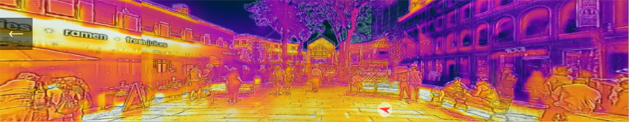

Impacts
What people are saying about my work
Home
Research
Publications
Impacts
GitHub
Twitter
Blog

Google Scholar
38 research papers (mostly outside education) using Energy2D
31 journal papers (mostly within education) based on Energy3D
Energy2D user testimonials
Energy2D User Forum
Thermtest adoption of Energy2D
Heat is Cool using Energy2D
Korean YouTube about Energy2D
Blog article using Energy2D
Blog article using Energy2D
Infrared imaging work
Visual Arts Research
review of my visual process analytics
Simulation and Learning: A Model-Centered Approach
review of my work on Energy2D and Molecular Workbench
High Frequency Electronics Magazine
: Mention of Energy2D
AECbytes Magazine
: Mention of Energy2D
Computational Fluid Dynamics, Second Edition: A Practical Approach
: Recommendation of Energy2D
The Technology Outlook for STEM+ Education 2012-2017: An NMC Horizon Report Sector Analysis
: Natural user interface